Algorithm when DataMining
Table of Contents
- 1. DONE 模型选择
[3/3] - 2. DONE 预处理
[5/5] - 3. DONE 基于树的算法
[2/2] - 4. DONE KNN相关算法
[2/2] - 5. DONE Logistic
[3/3] - 6. DONE 基于贝叶斯的算法
- 7. DONE EM算法
- 8. DONE 集成学习
- 9. TODO 支持向量机
[5/6] - 10. 神经网络
- 11. DONE 聚类算法
[2/2] - 12. DONE 数值优化专题
- 13. 神经网络与深度学习
- 14. 工具
1 DONE 模型选择[3/3]
- State "DONE" from "TODO"
- State "TODO" from "TODO"
- State "TODO" from "TODO"
- State "TODO" from "TODO"
- State "TODO" from "TODO"
- State "TODO" from "TODO"
- State "TODO" from "TODO"
1.1 DONE 模型评价[4/4]
见文件 utils/score.py
1.1.1 DONE 二分类模型
- accuracy
- precision
- recall
- f1
- aucroc
- 只在输出为概率时有用，如logistic回归
- auc 位roc曲线的下面积，其物理意义为任取一对正负样本对，正样本的score大于负样本的概率
1.1.2 DONE 多分类模型
- f1micro
- f1macro
- f1weight
1.1.3 DONE 回归模型
- explainedvariance
- absoluteerror
- squarederror
- RMSE(root mean squared error)
- RMSLE(root mean squared log error, in case of the abnormal value)
- r2
- medianabsoluteerror
1.1.4 CANCELED 聚类模型
了解即可
- 互信息
- rand系数
- 轮廓系数
1.2 DONE 交叉验证
- 留出法：选出两个互斥子集分别作为训练集和测试集
- K折交叉：分成K个互斥子集，对每一个子集作为测试集，其他的作为训练集，进行K次检验（K=样本数时，为留一法）
- 自助法：
从训练集D中有放回的抽样，得到D'，如果抽的次数足够多，则始终没被抽到的概率将近三分之一：
\begin{eqnarray} \nonumber \lim_{m\rightarrow \infty} ( 1- \frac{1}{m}) ^ m \rightarrow \frac{1}{e} = 0.368 \end{eqnarray}注意：该公式在随机森林抽取变量时也同样用掉了，证明三分之一这个概率
此时将D'作为训练集，D/D'(没被抽到的)作为测试集，进行验证。
自助法在数据集较小，难以有效划分训练集和测试集时非常有用 ，但是由于改变了初始数据的分布，因此会引入估计偏差，所以前两种用的比较多一点
1.3 CANCELED 网格搜索
2 DONE 预处理[5/5]
- State "DONE" from "TODO"
2.1 CANCELED 标准化，归一化
2.2 CANCELED 异常值
winsorize 变换
2.3 CANCELED 缺失值
- 均值、中值、分位数、众数、随机值填补，效果一般
- 通过其他非缺失变量预测，或是进行差值与拟合，但是必须是存在某些关系的变量才行
- 最准确的方法：把变量映射到高维空间。比如性别，有男、女、缺失三种情况，则映射成3个变量：是否男、是否女、是否缺失。连续值不建议这样处理。
2.4 CANCELED 编码
2.5 DONE 特征选择
2.5.1 Filter
自变量和目标变量之间的关联
注意
- 自变量只有两种情况：连续 或 0-1
- 因变量有三种情况：连续 0-1 或 多分类
2.5.1.1 方差法
- 任何自变量
- 任何因变量
2.5.1.2 相关系数
- 任何自变量
- 连续或 0-1 因变量
2.5.1.3 卡方检验
- 任何自变量
- 0-1或多分类因变量
2.5.1.4 互信息
- 任何自变量
- 任何因变量（最大信息系数法用以处理定量数据）
2.5.2 Wrapper
递归特征消除
2.5.3 Embedded
为什么正则项(Regularization)可以防止过拟合？
ref: http://blog.csdn.net/jackie_zhu/article/details/52134592 ref: https://www.zhihu.com/question/20700829
模型过拟合的原因往往是模型过于复杂，拟合了不需要的参数
简单的说，正则项通过损失函数中的惩罚项，对参数施加限制，使其对噪声和异常值敏感程度较小
- L1正则
- L2正则
这里的 lambda 越大，表示对 w 的限制越强， w越接近0，（对应图中的区域越小） 模型复杂度越低，越不容易过拟合，模型方差越小
过拟合：高方差
欠拟合：高偏差
概率论角度解释
比如L2正则，相当于施加了一个0均值，α-1 为方差的正态分布约束，将其加入到极大似然里去，求对数，去掉常数项，即是后面的形式
- 当 α=0 时，即高斯分布方差趋向于无穷大，为无信息先验，即没有加上约束
- 当 α 增大时，表明先验的方差越小，模型越稳定，相对的variance越小，越不容易过拟合
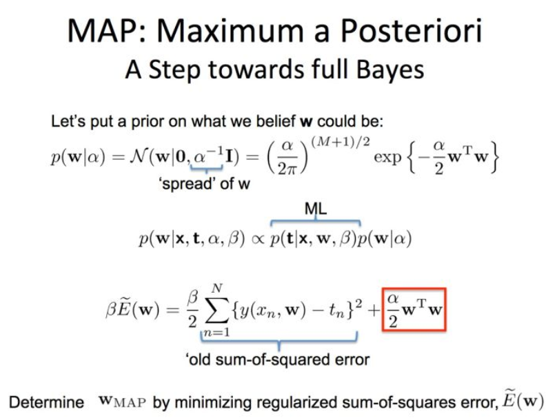
为什么L1正则可做特征选择？
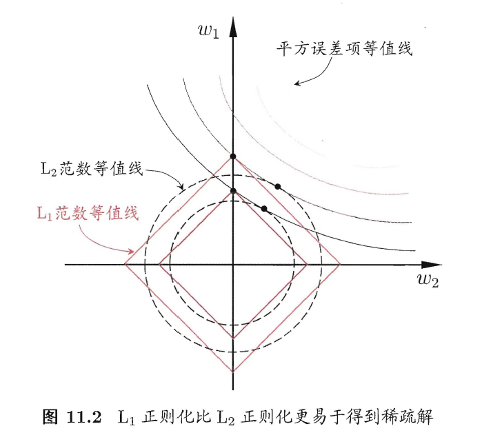
3 DONE 基于树的算法[2/2]
- State "DONE" from "TODO"
- State "TODO" from "TODO"
- State "TODO" from ""
3.1 DONE 决策树
- State "TODO" from ""
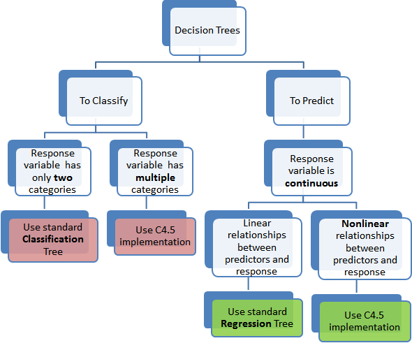
3.1.1 分类树
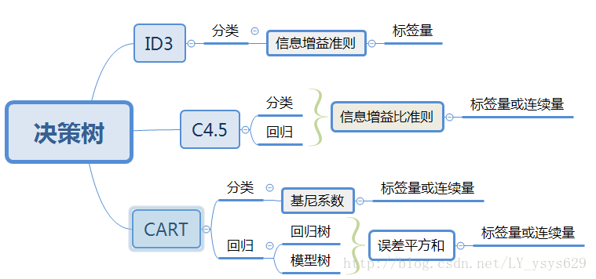
- ID3
- 划分依据：最大信息熵增益
- 多叉树
- 只针对分类变量
- C4.5
- 划分依据：信息增益比率（使用分裂信息来惩罚取值较多的Feature，防止取值较多的feature由于其信息增益较大而被优先选中）
- 多叉树
- 分类变量或连续变量
- CART
- 根据基尼系数划分
- 二叉树
- 分类变量或连续变量
3.1.2 回归树
回归树本质上与分类树类似，只不过每一个分支节点和叶节点，都会得到一个因变量的预测值，并通过该预测值得到估计的均方误差，用来判断分类的结果，作为划分依据
3.1.3 TODO 剪枝
- State "TODO" from ""
3.2 DONE 随机森林
3.2.1 概述
什么是随机森林：
- 森林：根据集成学习(Ensemble Learning)的思想，通过多个决策树进行分类，最终结果由多个决策树结果投票得到
- 随机：决策树的训练样本是从原始训练集中随机得到的：
- 原始训练集的总样本数为N，而每棵树的随机训练集的样本数也为N，但是是从原始样本中有放回抽N次得到的(bootstrap)
- 原始训练集的总特征数为M，而每棵树的随机训练集的特征数为m(m<=M)，从原始样本的M个特征中随机无放回的抽取，m为随机森林唯一的超参数
为什么抽取样本时是有放回的 如果不是有放回抽样，则每颗树的训练样本都是一样的（如果抽N个）、或者是高度相关的（如果抽n(n<N)个样本，此时至少有(2*n-N)个样本是一样的）
随机森林的错误率和两个因素有关：
- 两颗树样本的相关性越大，错误率越大
- 每个树的分类能力越强，整个森林的错误率越小
参数m的增加将导致树之间的相关性和树的分类能力同时增加，而m的减小也会导致两者同时减小，因此 如何确定m非常关键
3.2.2 优缺点
3.2.2.1 优点
- 在当前所有算法中，具有极好的准确率
- 能够有效地运行在大数据集上
- 能够处理具有高维特征的输入样本，而且不需要降维
- 能够评估各个特征在分类问题上的重要性
- 在生成过程中，能够获取到内部生成误差的一种无偏估计
- 对于缺省值问题也能够获得很好得结果
- 需要调的参数非常少
- 几乎不会有过拟合的问题，因为它相当于已经在内部进行了交叉验证（Breiman，2001），然而这点尚有争议（Elith and
Graham，2009）。
- 不需要顾忌多重共线性
3.2.2.2 缺点
- 对于回归问题表现不好，无法给出连续的预测，并且只能在训练集因变量的范围内进行预测
- 对于许多统计建模者来说，随机森林给人的感觉像是一个
黑盒子 - 对于非平衡数据集效果不好，倾向于类别较多的值
3.2.2.3 为什么随机森林不存在过拟合问题
- 随机的样本和随机的特征使得模型不易陷入过拟合，具有较强的抗噪能力
- 无需通过交叉验证对其误差进行估计，它可以在内部进行评估，通过oob估计得到误差的无偏估计：
- 对每个样本，计算它作为oob样本的树对它的分类情况（约1/3的树）；
- 然后以简单多数投票作为该样本的分类结果；
3) 最后用误分个数占样本总数的比率作为随机森林的oob误分率。
oob误分率是随机森林泛化误差的一个无偏估计，它的结果近似于需要大量计算的k折交叉验证。
3.2.3 实现
4 DONE KNN相关算法[2/2]
- State "DONE" from "TODO"
- State "TODO" from "TODO"
- State "TODO" from "TODO"
- State "TODO" from ""
4.1 DONE KNN
4.1.1 模型
简述： 根据离待分类点距离最近的K个点的label，确定待分类点的label。
4.1.1.1 三要素
- 训练集
- 距离度量
- K值
当三要素确定后，分类结果可以唯一确定。
4.1.1.2 距离度量
- 明可夫斯基距离 $ ∑l=1n |xi(l) - xj(l)|p $
- 欧式距离 p = 2
- 曼哈顿距离 p = 1
- 最大值距离, p = inf, \(\max_{l} |x_i^{(l)} - x_j^{(l)}|\)
4.1.1.3 K值的选择
- K值较小：
- 学习的近似误差(approximation error)减小，只有相近的点才会起到作用
- 学习的估计误差(estimation error)增大，对近邻的点过于敏感，容易过拟合
- K值增大：
- 与上面刚好相反，意味着模型变简单，容易欠拟合
在实际应用中，K一般取一个较小的值，然后通过交叉验证法来取最佳K值
4.1.2 分类的规则
KNN算法中的分类决策规则往往是多数表决
多数表决等价于经验风险最小化 《统计学习方法》(P40)
4.1.3 代码实现
4.2 DONE KD树
- 用原始数据生成一颗平衡二叉树，对数据进行保存于索引
- 维度越接近样本数时，效率越低，越接近于KNN
- 找最近邻需要通过二叉搜索和 回溯 算法
- 从root节点开始，DFS搜索直到叶子节点，同时在stack中顺序存储已经访问的节点。
- 如果搜索到叶子节点，当前的叶子节点被设为最近邻节点。
- 然后通过stack回溯:
- 如果当前点的距离比最近邻点距离近，更新最近邻节点.
- 然后检查以最近距离为半径的圆是否和父节点的超平面相交.
- 如果相交，则必须到父节点的另外一侧，用同样的DFS搜索法，开始检查最近邻节点。
- 如果不相交，则继续往上回溯，而父节点的另一侧子节点都被淘汰，不再考虑的范围中.
- 当搜索回到root节点时，搜索完成，得到最近邻节点。
- 算法复杂度分析：
| Algorithm | Average | Worst |
|---|---|---|
| Space | O(n) | O(n) |
| Search | O(logn) | O(n) |
| Insert | O(logn) | O(n) |
| Delete | O(logn) | O(n) |
- 当考虑K近邻时，可以维护一个近邻的优先队列（见wikiKDTree)
5 DONE Logistic[3/3]
- State "DONE" from "TODO"
- State "TODO" from "DONE"
- State "DONE" from "DONE"
- State "DONE" from ""
5.1 DONE 理论
5.1.1 sigmoid函数
将(-inf, inf)定义域映射到(0,1)值域，与之类似的还有tan函数。
sigmoid的重要性质：
$$ f'(x) = f(x)(1-f(x)) $$
对于logfistic回归模型，考虑 \(x=(1, x_1, x_2,...,x_n)\) ，设条件概率 \(P(y=1|x)=p\) ，则logistic回归模型为：
\begin{eqnarray} \nonumber P(y=1|x) = \frac{1}{1+e^{-g(x)}} \end{eqnarray}其中：
\begin{eqnarray} \nonumber g(x) = w^T x \end{eqnarray}那么相反，在x条件下不发生的概率为 \[ P(y=0|x)=1-p=1-P(y=1|x) \] ，所以，
\begin{eqnarray} \nonumber P(y=0|x) = 1 - \frac{1}{1+e^{-g(x)}} = \frac{1}{1+e^{g(x)}} \end{eqnarray}所以事件发生于不发生的概率比为：
\begin{eqnarray} \nonumber \frac{P(y=1|x)}{P(y=0|x)} = e^{g(x)} \end{eqnarray}两边取对数得到：
\begin{eqnarray} \nonumber log(\frac{p}{1-p}) = g(x) = w^T x \end{eqnarray}5.1.2 估计方法
首先当然我们想到的是最小二乘估计，模仿线性回归，令残差平方和作为损失函数：
5.1.2.1 最小二乘估计
损失函数为：
\begin{eqnarray} \nonumber j(w) = \sum_i \frac{1}{2} (\phi(g(x_i)) - y_i)^2 \end{eqnarray}其中 \(\phi()\) 为sigmoid函数， 此时发现损失函数非凸，导致存在较多的局部最小值，难以求解
5.1.2.2 极大似然估计
将上文中的 \(P(y=i|x), i \in {0,1}\) 写成一般形式：
\begin{eqnarray} \nonumber P(y|x,w) = \phi(g(x))^y (1 - \phi(g(x)))^{(1-y)} \end{eqnarray}对于每一个样本，极大似然估计假设其独立同分布，则将每个样本概率相乘，可得其联合概率（似然值），为了方便计算，我们对似然值取对数，同时另z = g(x)：
\begin{eqnarray} \nonumber log(L(w)) = \sum_{i=1}^n (y^{(i)} ln(\phi(z^{(i)})) + (1-y^{(i)})(1 - ln(\phi(z^{(i)}))) \end{eqnarray}此时要取似然函数的最大值，而为了与损失函数对应，因此我们在左右两侧加上负号，得到损失函数：
$$ J(w) = -log(L(w)) $$
注意，这里就是为什么logistic回归要用对数损失而不是平方损失
此时损失函数见下图，如果样本值为1，则sigmoid函数值越接近1，损失越小
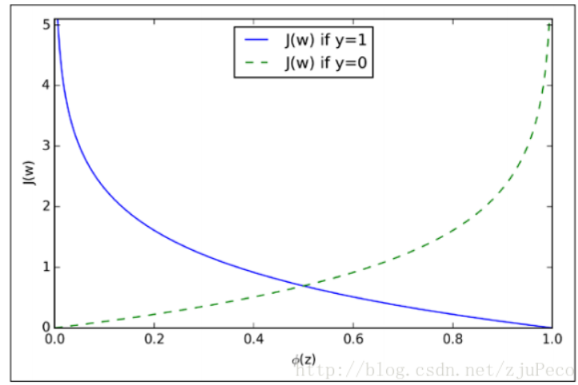
5.1.3 求解
5.1.3.1 梯度下降 （gradient descent）
梯度方向即函数变化最快的方向，沿着梯度方向寻找更容易找到函数的最大值，而沿着梯度想法的方向寻找更容易找到最小值
sigmoid函数有着如下优良的性质，因此求导非常容易
\begin{eqnarray} \phi ' (z) = \phi (z) (1 - \phi(z)) \end{eqnarray}对于梯度下降，我们需要求损失函数在参数向量一个分量上的偏导数，用以更新参数向量：
\begin{eqnarray} \frac{\partial J(w)}{\partial w_j} = - \sum_{i=1}^n (y^{(i)} \frac{1}{\phi(z^{(i)})} - (1 - y^{(i)}) \frac{1}{1 - \phi(z^{(i)})}) \frac{\partial \phi(z^{(i)})} {w_i} \end{eqnarray}而根据sigmoid的性质，可得：
\begin{eqnarray} \nonumber \frac{\partial \phi(z^{(i)})}{w_i} = \phi'(z^{(i)}) \frac{\partial z^{(i)}}{\partial w_i} \end{eqnarray}综上带入，即可得到较为简化的梯度函数：
\begin{eqnarray} \nonumber w_j := w_j - \eta \frac{\partial J(w)}{\partial w_i} = w_j + \eta \sum_{i=1}^n (y^{(i)} - \phi(z^{(i)})) x_j^{(i)} \end{eqnarray}5.1.3.2 随机梯度下降（stochastic gradient descent）
梯度下降的公式中可以看出，在样本量非常大，即 n->inf 时，每次更新权重会非常耗时，随机梯度下降即是为了解决此问题提出的
随机梯度下降是指每次更新权重时随机选出一个样本进行，而不是之前的全样本计算然后加总
随机梯度下降加速 对梯度下降重新建模：$w := m * w - η ()$，m表示动量（ Momentum ），物理意义为摩擦力，为了防止参数在谷底不能停止的情况，一般在一开始将m设为0.5，在一定的迭代次数后不断增加，最后到0.99。
在实践中，一般采取SGD + momentum的方式
5.1.3.3 小批量梯度下降（mini-batch gradient descent）
不使用全样本，而是每次抽取一定数量的样本
5.1.3.4 学习率更新
- 逐步降低（Step decay），即经过一定迭代次数后将学习率乘以一个小的衰减因子。典型的做法包括经过5次迭代（epoch）后学习率乘以0.5，或者20次迭代后乘以0.1。
- 指数衰减（Exponential decay），其数学表达式可以表示为：α=α0e−kt，其中，α0和k是需要设置的超参数，t是迭代次数。
- 倒数衰减（1/t decay），其数学表达式可以表示为：α=α0/(1+kt)，其中，α0和k是需要设置的超参数，t是迭代次数。
实践中发现逐步衰减的效果优于另外两种方法，一方面在于其需要设置的超参数数量少，另一方面其可解释性也强于另两种方法。
5.1.3.5 拟牛顿法
上述所有方法都是一阶更新方法，而加速的另外一种思路是利用二阶更新方法，包括牛顿法、拟牛顿法(http://blog.csdn.net/itplus/article/details/21897443)等等（这里要用到Hessian矩阵，对内存要求较高）。
5.2 DONE 实现
见mysimlpelogit.py
5.3 DONE 多元logistic情况（Multinormal）
如果存在多个分类，那么可以训练多个分类器，一类一个，每一个训练样本都只属于下面两类：“是这类”和“不是这类”。训练的时候也是训练N套参数。
对于一个测试样本，带入每一个分类器计算一遍概率，以概率最大的分类有效。
6 DONE 基于贝叶斯的算法
- State "DONE" from ""
6.1 朴素贝叶斯
6.1.1 贝叶斯模型简介
- 判别式模型(discriminative models)：直接对P(Y|X)建模，来预测Y，包括决策树，BP神经网络，支持向量机
- 生成式模型(generative models): 先对联合概率分布P(X, Y)建模，再由此获得P(Y|X)，包括贝叶斯模型
贝叶斯公式为（ 此处贝叶斯公式的分母由全概率公式推导得到 ）:
P(Y)为先验概率；P(X|Y)为样本对标记的条件概率，又称为似然；P(X)为用于归一化的“证据”(evidence)因子。因此估计P(Y|X)的问题变为如何估计P(Y)和P(X|Y)。
- P(Y)的估计：根据大数定律，当训练集包含充足的独立同分布样本时，可以通过样本频率估计总体概率
- P(X|Y)的估计：当训练集维度很高时，往往存在极多种可能，导致很多概率稀疏，因此有着较大的困难
6.1.2 朴素贝叶斯模型的提出
为了克服P(X|Y)在有限样本下估计困难的问题，提出“属性条件独立性假设”，即每个属性独立的对分类结果产生影响
贝叶斯公式分母对于所有类别来说是常数: 因为给定类别下只要比较正的概率和负的概率谁大即可，而正负概率的分母相等
由于对每个类别来说，P(X)是相同的，因此我们得到朴素贝叶斯判定准则：
\begin{eqnarray} \nonumber h_{nb}(x) = \max_{y \in Y} P(y) \prod\limits_{i=1}^{d} P(x_i|y) \end{eqnarray}其中，d为属性数，xi为第i个属性的取值，y为标签的类别，Y为标签的集合，此时xi的取值是我们要预测的测试样本的取值
- 标签的先验概率可以非常容易的得到：
其中|Dy|为第y类样本的数目，|D|为全样本数目
- 条件概率P(xi | y)可以估计为：
其中|Dy,xi|表示在Dy 中，第i个属性取值为xi的样本个数
- 对于连续属性，假定服从正态分布，利用样本可以估计出第y类样本该属性的均值和标准差，在根据该属性的取值和正态分布密度函数，得到其概率。
6.1.3 拉普拉斯平滑
为何要平滑
当某一类别下某属性的取值并没有观测到，这并不意味着其概率为0，但是会导致整个概率等于0，因此需要进行平滑使其非常小但是不为0。
什么是拉普拉斯平滑
其中，N表示y所有的类别数，Ni表示第i个属性所有的类别数。
6.2 半朴素贝叶斯
半朴素贝叶斯打破了变量之间相互独立的假定，同时提出了 独依赖估计(One-Dependent Estimator) 策略，即假设每个变量只和一个父属性有关，即：
其中pai为xi所依赖的父属性，该式求解方法与之前类似，关键是如何合理的得到pai，目前有如下几种方法：
SPODE(Super-Parent One-Dependent Estimator):假定所有属性都依赖于一个父属性（超父），通过交验证方法来确定该超父TAN(Tree Augmented Naive Bayes):在最大加权生成树的基础上，通过以下步骤确定依赖关系：- 计算任意两个属性之间的条件互信息I(xi, xj|Y)
- 以属性为节点构建完全图，任意两个节点间边的权重设为该完全互信息
- 构建此完全图的最大加权生成树，挑选根变量，将边变为有向边
- 加入类别结点y，增加从y到每个属性的有向边
AODE(Average ODE):将每个结点作为超父来构建SPODE，通过集成学习进行估计
6.3 贝叶斯网络
略
7 DONE EM算法
- State "DONE" from ""
7.1 简介
由于实际观测中存在属性未知的情况，针对这种“未观测”变量，EM算法此时被用来对模型的“隐变量”进行有效的估计。
EM算法是一种 迭代式 算法， 他的基本想法是：
- 如果参数已知，则可以根据训练数据推断出最优隐变量（E步）
- 如果隐变量的值已知，则可以方便的对参数进行极大似然估计（M步）
EM算法交替上述两个步骤，直至收敛，得到最优隐变量和参数
是一种 非梯度 的优化算法
8 DONE 集成学习
- State "DONE" from "TODO"
- State "TODO" from ""
8.1 理论
(泛化能力弱 <–> 偏差高、方差大)
每个基分类器错误率为 epsilon，基分类器有如下两类：
- 弱基分类器：偏差高（准确度低），方差小（抗过拟合，更简单）
- 强基分类器：偏差低，方差大
假设基分类器错误率相互独立 ，由Hoeffding不等式可知，集成的错误率为：
所以当学习器够多时，错误率时接近于0的，但是注意前提！
因此，问题的核心即是： 如何产生“好而不同”的个体学习器
目前集成学习可以分成如下两类
8.1.1 Boosting方法
代表算法： AdaBoost, GBDT
bosting采用的是弱基分类器，主要关注降低偏差， 证明见：https://www.zhihu.com/question/29036379
基本思想： 通过对之前训练集进行调整，使之前错分的样本更加受到关注，然后在训练下一个模型，知道学习器数目达到事先制定的值T，最终对T个基学习器进行加权结合。
Boosting方法要求基学习器对特定数据分布（数据权重）进行学习，主要有两种方法：
- 对于可以接受权重参数的基分类器，采用re-weighting方法，每次训练更新样本权重
- 对于无法接受权重参数的基分类器，采用re-sampling方法，每次学习基于数据分布（权重）进行采样，用采样样本进行训练
re-weighting 和 re-sampling 对比
boosing每一轮都要检查当前分类器是否满足基本条件（比如检查是否比之前的更好），re-weighting如果不满足，则直接跳出，可能分类器数目未达到T，使效果不好；而re-sampling方法如果不满足，则可以重新抽样，再训练分类器，直至满足未知，因此更稳健。
8.1.1.1 Adaboost算法
核心思想是让误分类的点权重变高，从而加大分错的惩罚
adaboost算法仅仅提供框架，伪代码如下
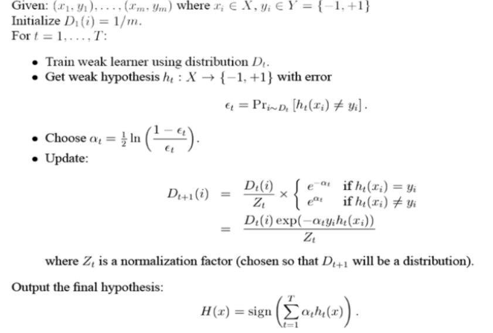
优点：
- adaboost是一种有很高精度的分类器
- 可以使用各种方法构建子分类器，adaboost算法提供的是框架
- 当使用简单分类器时，计算出的结果是可以理解的。而且弱分类器构造极其简单
- 简单，不用做特征筛选
- 不用担心overfitting！
8.1.1.2 GBDT(Gradient Boosting Decision Tree)
ref: https://www.jianshu.com/p/005a4e6ac775 https://www.zhihu.com/question/29036379 （更为详细）
理解如下概念：
- 回归树 比如CART，以平方损失作为划分标准，在每一个连续值中迭代出最优划分，预测值为当前节点的均值
- 提升树 当采用平方误差损失函数时，每一棵回归树学习的是之前所有树的结论和残差，提升树即是整个迭代过程生成的回归树的累加。
梯度提升树GBDT
对于一般损失函数， 每一步优化没有那么容易？ 比如说绝对损失和Huber损失，针对这一问题，Freidman提出了梯度提升算法：
用最速下降的近似方法，即利用损失函数的负梯度在当前模型的值，作为回归问题中提升树算法的残差的近似值，拟合一个回归树
下式表明，残差事实上是最小均方损失的反向梯度：
\begin{eqnarray} \nonumber - \frac{\partial (\frac{1}{2} * (y - F_{i-1}(x))^2)}{\partial F(x)} = y - F_{i-1}(x) \end{eqnarray}
步骤
1、初始化，估计使损失函数极小化的常数值，它是只有一个根节点的树，即gamma是一个常数值。 2、 （a）计算损失函数的负梯度在当前模型的值，将它作为残差的估计 （b）估计回归树叶节点区域，以拟合残差的近似值 （c）利用线性搜索估计叶节点区域的值，使损失函数极小化 （d）更新回归树 3、 得到输出的最终模型 f(x)
伪代码如下：
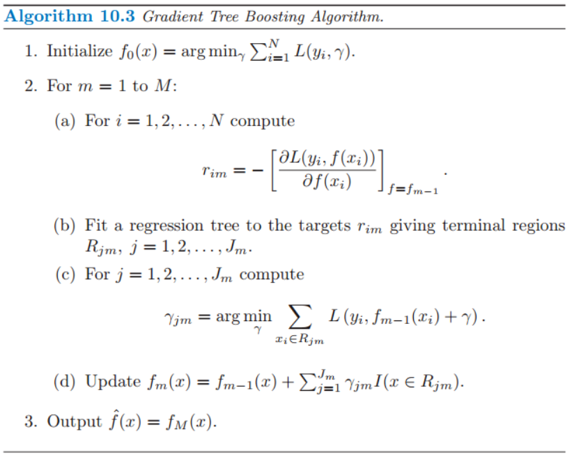
可以证明， Gradient Boosting相当于二分类的Adaboost算法， 而指数损失仅可用于二分类的情况
8.1.2 bagging
代表算法：随机森林
bagging通过随机生成多个互相之间尽可能有较大差异的分类器，同时保证每个分类器的效果，最终进行整合。
算法复杂度为 T(O(N)+O(s)) 约等于O(N) N为样本总数， 非常高效，可并行
可以通过 “袋外估计” 对泛化误差进行无偏的估计
Bagging主要关注降低方差，基分类器应当为 强基分类器（低偏差，高方差） 因此在不剪枝决策树、神经网络等易受样本干扰的学习器上效果更为明显
8.1.3 为什么说bagging减少variance，而boosting减少bias
8.2 相关包学习
8.2.1 GBDT
sklearn下面 如何调参： ref: http://www.alliedjeep.com/147311.htm
8.2.2 XGBoost
安装： 直接pip whl文件安装，注意numpy需要mkl版本的，见 https://www.lfd.uci.edu/~gohlke/pythonlibs/#xgboost
与GBDT区别：
ref: http://blog.csdn.net/sb19931201/article/details/52557382
1.传统GBDT以CART作为基分类器，xgboost还支持线性分类器，这个时候xgboost相当于带L1和L2正则化项的逻辑斯蒂回归（分类问题）或者线性回归（回归问题）。 —可以通过booster [default=gbtree]设置参数:gbtree: tree-based models/gblinear: linear models
2.传统GBDT在优化时只用到一阶导数信息，xgboost则对代价函数进行了二阶泰勒展开，同时用到了一阶和二阶导数。顺便提一下，xgboost工具支持自定义代价函数，只要函数可一阶和二阶求导。 —对损失函数做了改进（泰勒展开，一阶信息g和二阶信息h,上一章节有做介绍）
3.xgboost在代价函数里加入了正则项，用于控制模型的复杂度。正则项里包含了树的叶子节点个数、每个叶子节点上输出的score的L2模的平方和。从Bias-variance tradeoff角度来讲，正则项降低了模型variance，使学习出来的模型更加简单，防止过拟合，这也是xgboost优于传统GBDT的一个特性 —正则化包括了两个部分，都是为了防止过拟合，剪枝是都有的，叶子结点输出L2平滑是新增的。
4.shrinkage and column subsampling —还是为了防止过拟合，论文2.3节有介绍，这里答主已概括的非常到位
- 。。。
9 TODO 支持向量机[5/6]
- State "TODO" from "TODO"
9.1 DONE 线性可分支持向量机与对偶方法
线性可分支持向量机是指通过一个超平面可以完全将两个类别区分开（过于理想的情况，仅帮助推导与理解）
9.1.1 对偶问题
对于上述优化，可以直接用凸二次规划的计算包来解，但是为了更高效，可以将其转为对偶问题来解：
对上式每条约束添加拉格朗日乘子，得到拉格朗日函数：
\begin{eqnarray} L(w, b, \alpha) = \frac{1}{2}||w||^2 + \sum_{i=1}^N \alpha_i (1 - y ^{(i)} (w^T x ^{(i)} +b)) \end{eqnarray}分别对w和b求偏导，可以得到：
\begin{eqnarray} \nonumber w = \sum_{i=1}^N \alpha_i y_i x_i \\ \nonumber 0 = \sum_{i=1}^N \alpha_i y_i \end{eqnarray}将上式带入（1）式，将w和b消去，即可得到该问题的对偶问题： 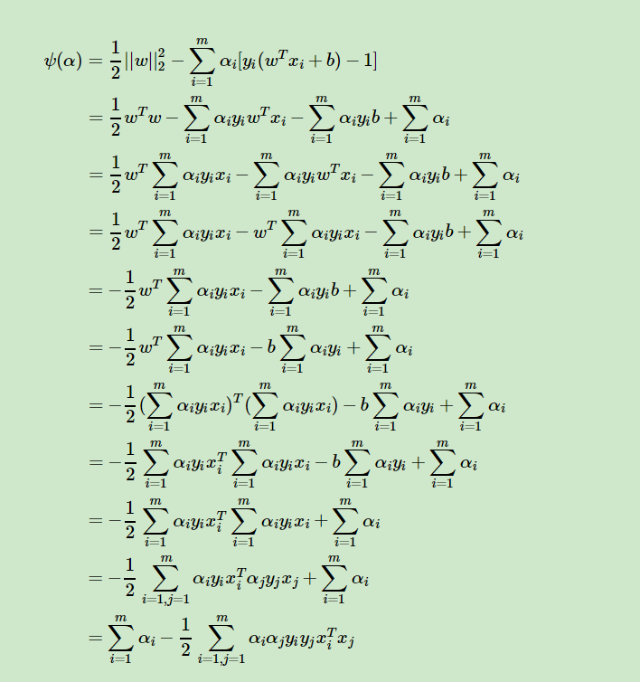
\begin{eqnarray} \nonumber &\min_{\alpha}& \frac{1}{2} \sum_{i=1}^N \sum_{j=1}^N \alpha_i \alpha_j y_i y_j x_i^T x_j - \sum_{i=1}^N \alpha_i \\ \nonumber &s.t.& \ \sum_{i=1}^N \alpha_i y_i = 0 \\ &\ & \alpha_i > 0, \ i = 1,2,...,N \end{eqnarray}求解上述优化需要用到SMO(Sequential Minimal Optimization)算法，在这之前需要先了解KKT条件
9.1.2 KKT条件(Karush-Kuhn-Tucker, 库恩塔克条件)
针对非等式约束的优化问题，我们将其写为：
\begin{eqnarray} \nonumber &\min& f(X)\\ \nonumber &s.t.& h_j(X) = 0, j=1,2,...,p \\ \nonumber & \ \ & g_k(X) \le 0, k = 1,2,...q \end{eqnarray}其中p和q分别为等式和不等式约束的个数，则可以定义不等式约束下的拉格朗日函数L：
\begin{eqnarray} \nonumber L(X, \lambda, \alpha) = f(X) + \sum_{j=1}^p \lambda_j h_j(X) + \sum_{k=1}^q \alpha_k g_k(X) \end{eqnarray}则KKT条 件为：
\begin{eqnarray} \frac{\partial L}{\partial X} |_{X=X^*} = 0 \\ \lambda_j \neq 0 \\ \alpha_k \ge 0 \\ \alpha_k g_k(X^*) =0 \\ h_j(X^*) = 0 \\ g_k(X^*) \le 0 \end{eqnarray}其中，(1)是对拉格朗日函数取极值时候带来的一个必要条件，(2)是拉格朗日系数约束（同等式情况），(3)是不等式约束情况，(4)是互补松弛条件，(5)、(6)是原约束条件。
在支持向量机中如何使用KKT条件
（这一块很多书上讲的都不是非常详细，所以需要自己理解）
注意 ：针对未对偶之前的优化函数，可以写成标准形式：
对应KKT条件中的不等式约束 \(g_i(X) = 1 - y ^{(i)} (w^T x ^{(i)} + b)\) ，而 alphai 即为其对偶问题的决策变量，因此有：
\begin{eqnarray} \alpha_i \ge 0 \\ 1 - y ^{(i)} (w^T x ^{(i)} + b) \le 0 \\ \alpha_i (1 - y ^{(i)} (w^T x ^{(i)} + b)) = 0 \end{eqnarray}上式反映出，如果 alpha1 = 0，则意味着样本不会对f(X)有任何影响；如果alphai > 0， 则必有 \(y ^{(i)} (w^T x ^{(i)} + b) =1\) ,所对应的样本在最大间隔边界上（结合图想一想为什么），是一个支持向量。
从而可以得到支持向量机的一个重要性质： 训练完成后，大部分训练样本都不需要保留，最后结果只和支持向量有关
9.1.3 SMO算法(Sequential Minimal Optimization， 序列最小化）
坐标下降法
一次优化一个变量，固定其他所有变量，找到决策变量下对应的最优解，然后再换其他变量作为优化变量，迭代至收敛
SMO算法
SMO算法的思路是，每次选择两个变量： alphai 和 alphaj， 并固定其他参数，那么初始化后，SMO将重复如下步骤直至收敛：
- 选取一对需要更新的变量 alphai, alphaj
- 固定alphai, alphaj以外的参数，求解优化方程，获得更新后的alphai, alphaj
为什么高效
之所以说SMO高效，是因为优化两个参数的过程可以做到十分高效：
- 首先，另 \(\alpha_i y_i + \alpha_j y_j = c, \alpha_i \ge 0, \alpha_j \ge 0\) ，其中 \(c = -\sum_{k \neq i,j} \alpha_k y_k\) ，满足对偶问题的零和约束
- 将上市带入目标函数，消去 alphaj，只剩下alphai的单变量二次规划问题，且仅有一个非负约束，该二次规划有闭式解
与KKT条件的关系
当alphai, alphaj 中至少有一个不满足KKT条件时，目标函数就会在迭代后减小，而为了使减少速度最快，其违背KKT条件的程度也要越大
因此SMO采取了一个启发式的算法，是 选取的两变量对应样本之间的间隔最大 ，这将会给目标函数带来更大的影响。
如何得到w和b
估计出所有的alpha之后，w很方便可以根据前文拉格朗日求导等于0后的公式得到，而b则是根据当前所有的支持向量分别求b后再平均得到：
\begin{eqnarray} \nonumber b = \frac{1}{|S|} \sum_{s \in S} (y_s - \sum_{i \in s} \alpha_i y_i x_i^T x_s) \end{eqnarray}其中，S为所有的支持向量集合，判断样本是否为支持向量可以根据KKT条件的公式(2)
9.2 DONE 线性不可分支持向量机
- State "DONE" from "TODO"
9.2.1 核函数
当样本线性不可分时，考虑将其映射到高维空间 \(x \rightarrow \phi(x)\) ，但是随之而来的是复杂的计算量，因此引进了核函数：
线性可分的情况下，无论是优化方程还是求wTx时都要遇到求向量内积的情况，即 $φ(x)T φ(x) $ ，因此可以设想一个函数：
\begin{eqnarray} \nonumber k(x_i, x_j) = <\phi(x_i), \phi(x_j)> = \phi(x_i)^T \phi(x_j) \end{eqnarray}
上述函数称为 核函数 ，经证明，当k(·,·)是对称函数时，核矩阵K总是半正定的。换句话说，只要一个对称函数对应的核矩阵是半正定的，就可以作为核函数使用。
9.2.1.1 核函数的优势
由于支持向量机中所有x的运算均是求内积，因此核函数在将数据映射到高维的同时，又避免了高维x的复杂计算，仅仅是在低纬度下计算内积。
9.2.1.2 哪些通用核函数
- 多项式核：
其中i，j表示第i，j个样本
- 高斯核
其中, sigma为带宽
- 高斯核会将原始空间映射为无穷维空间
- 如果σ选得很大的话，高次特征上的权重实际上衰减得非常快，所以实际上（数值上近似一下）相当于一个低维的子空间；
- 反过来，如果σ选得很小，则可以将任意的数据映射为线性可分——可能会出现非常严重的过拟合问题
- 拉普拉斯核
σ>0
- Sigmoid核
tanh为双曲线正切函数，β >0, θ<0
9.2.1.3 如何选择核函数
ref: https://www.zhihu.com/question/21883548
（1）如果特征维数很高，往往线性可分（SVM解决非线性分类问题的思路就是将样本映射到更高维的特征空间中），可以采用LR或者线性核的SVM； （2）如果样本数量很多，由于求解最优化问题的时候，目标函数涉及两两样本计算内积，使用高斯核明显计算量会大于线性核，所以手动添加一些特征，使得线性可分，然后可以用LR或者线性核的SVM； （3）如果不满足上述两点，即特征维数少，样本数量正常，可以使用高斯核的SVM。
9.3 DONE 线性支持向量机(软间隔与正则化)
9.3.1 软间隔
当样本不一定线性可分，而是存在一些误分类样本时，需要引入 “软间隔” 的概念，即允许某些样本不满足约束：
\begin{eqnarray} \nonumber y_i (w^T_i +b) \ge 1 \end{eqnarray}于是，优化目标可以写成：
\begin{eqnarray} \nonumber \min \frac{1}{2} ||w||^2 + C \sum_{i=1}^N l_{0/1}(y_i(w^T x_i + b) - 1) \end{eqnarray}其中，C>0
- 当C无穷大时，将迫使每个样本均满足 \(y_i (w^T_i +b) \ge 1\) 约束，于是其等价于一般形式
- 当C取有限值时，将允许一些不满足的约束
9.3.2 损失函数
而l0/1为0/1损失函数，即函数值小于0时为1，否则为0。
由于该函数性质非凸，非连续的性质不好，因此引入其他类型的损失函数：
- hinge损失: max(0, 1-x)
- 指数损失: exp(-x)
- logistic损失: log(1+exp(-z))
9.3.3 加入松弛变量
引入松弛变量，原优化方程变为：
\begin{eqnarray} \nonumber &\min_{w,b,\zeta}& \frac{1}{2} ||w||^2 + C \sum_{i=1}^N \zeta_i \\ &s.t.& y_i(w^T x_i + b) \ge 1 - \zeta_i \\ &\ \ & \zeta_i \ge 0, \ i=1,2,...,N \end{eqnarray}
这就是常用的 软间隔支持向量机
根据其拉格朗日函数以及偏导等于0，类似前文带入可以得到其对偶问题：
\begin{eqnarray} \nonumber &\min_{\alpha}& \frac{1}{2} \sum_{i=1}^N \sum_{j=1}^N \alpha_i \alpha_j y_i y_j x_i^T x_j - \sum_{i=1}^N \alpha_i \\ \nonumber &s.t.& \ \sum_{i=1}^N \alpha_i y_i = 0 \\ &\ & C> \alpha_i > 0, \ i = 1,2,...,N \end{eqnarray}相对于线性可分支持向量机，其唯一区别就是多了一个 α 上界为C的约束
9.3.3.1 KKT条件：
上述条件有着重要的意义：
- αi=0时，样本不会在表示w的求和中出现，此时样本不会对 f(xi)有着任何影响，位于两个最大间隔（边界）之外，
- αi>0时，必有 yi f(xi) = 1 - ζi，则该样本是支持向量
根据软间隔支持向量机拉格朗日函数对zeta求偏导后的结果：C = αi+mui
- αi<C时，mui>0，而根据最后一个KKT条件，zetai = 0，所以样本刚好落在边界上，为支持向量
- αi=C时，muI=0，此时zetai<=1，样本落在最大间隔（边界）内部
以上在求解SMO算法时有着重要的意义
9.4 DONE 实现
9.5 TOLEARN 支持向量回归
10 神经网络
11 DONE 聚类算法[2/2]
- State "DONE" from "TODO"
- State "TODO" from ""
11.1 DONE Kmeans
- State "TODO" from ""
11.2 DONE 层次聚类
- State "TODO" from ""
12 DONE 数值优化专题
- State "DONE" from ""
ref :
12.1 预备知识
12.1.1 损失函数
损失函数用来描述模型的预测值和真实值的不一致程度，它是一个 非负实值函数 ，一般要求对其求最小化，一般损失函数表示为：
损失函数和代价函数的区别：
- 损失函数针对一个样本
- 代价函数针对多个样本，且一般以平均损失的形式展现
常见的损失函数有如下几种：
12.1.1.1 0-1损失(Binary Loss)
- yi = f(xi)时为1
- 否则为0
12.1.1.2 感知损失（Perceptron Loss）
- |yi - f(xi)| > t 时为1
- 否则为0
12.1.1.3 Hinge Loss
Hinge 损失用来解决间隔最大化的问题，比如在svm中解决几何间隔最大化
定义为 li = max(0, 1 - yi*f(xi)) yi 为-1或+1
12.1.1.4 对数损失
在极大似然估计的情况下，由于是连乘的形式处理起来不方便，因此取对数，转为连加，比如logistic回归
li = yi * log(f(xi)) + (1-yi) * log(1 - f(xi)) yi为0或者1
12.1.1.5 平方损失
不多解释
12.1.1.6 绝对损失(Absolute Loss)
li = |yi - f(xi)|
12.1.1.7 指数损失
adaboost用的就是指数损失（推导暂时不要求掌握）
注意：指数损失必须是二分类问题
li = exp(- yi * f(xi)) yi 为 -1 或 +1
12.1.2 函数几个重要的点
12.1.2.1 拐点
二阶导数等于0，凹凸性改变
12.1.2.2 极值点
驻点要求一阶导数必须存在，而极值点对导数没有要求
12.1.2.3 驻点
一阶导数等于0，单调性改变
12.1.2.4 鞍点（saddle point）
目标函数在此点上的梯度（一阶导数）值为 0， 但从改点出发的一个方向是函数的极大值点，而在另一个方向是函数的极小值点。
判断鞍点的一个充分条件是：函数在一阶导数为零处（驻点）的海塞矩阵为不定矩阵(特征值有正有负)。
补充
实对称矩阵正交相似于对角矩阵 即与对角矩阵合同 而对角矩阵的主对角线上的元素即A的特征值 所以对称矩阵A正定 A的特征值都大于0
12.1.3 梯度和海塞矩阵
梯度是指原函数对参数的一阶偏导
海塞矩阵是对参数的二阶偏导组合，为KxK维矩阵，K为参数个数
12.2 优化方法
12.2.1 优化问题划分：
12.2.1.1 凸优化
- 什么是凸集
- 什么是凸函数
- 什么是凸优化
对于凸优化问题，任何局部最优解都是全局最优解！！
12.2.1.2 无约束最优化
- GD
- SGD
- TR
- CG
- Newton
- BFGS
- L-BFGS
12.2.1.3 约束最优化
- KKT条件
12.2.1.4 局部最优化
几个要记住的定理： 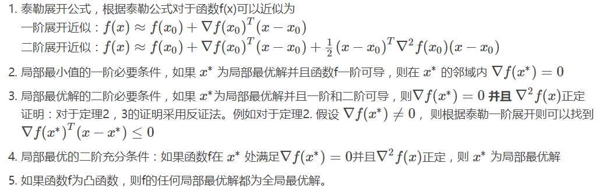
12.2.2 详细的优化方法：
12.2.2.1 坐标下降
变动一个参数，保持其余参数不变，找到该参数最优解，不断迭代至参数不变
SMO算法是变动两个参数，固定其他，来求解
12.2.2.2 梯度下降
参数每次迭代均按照该参数偏导的负数，乘一定步长作为增量
证明 梯度下降可以找到极小值 ：
f(x)在点x的一阶泰勒展开为：
\begin{eqnarray} \nonumber f(x + \Delta x) &=& f(x) + \Delta x^T \frac{\partial f(x)}{\partial x} \\ \nonumber f(x + \alpha p) &=& f(x) + \alpha * g(x) * p + o(\alpha * |p|) \end{eqnarray}而：
\begin{eqnarray} \nonumber g(x) * p = |g(x)| * |p| * cos \theta \end{eqnarray}当 θ取180°时取最小值，且为负，保证了每次迭代f(x)都会减小。
如果是凸优化，根据定理，可以找到最小值
在机器学习中的应用：
梯度下降针对的是求和形式的优化问题：
\begin{eqnarray} \nonumber f(w) = \sum_{i=1}^N f_i(w, x_i, y_i) \end{eqnarray}提的下降形式为：
\begin{eqnarray} w_{t+1} = w_t - \eta_{t+1} \sum_{i=1}^N \nabla f_i(w_t, x_i, y_i) \tag{(1)} \end{eqnarray}其中 wt，wt+1，∇ fi 均为列向量，长度等于变量数，t为第t期的值，i为第i个样本，∇fi(wt, xi, yi)表示f在第i个样本下的梯度向量。
12.2.2.3 随机梯度下降
由于梯度下降需要计算每个样本的梯度向量，样本量大时非常复杂，因此引入梯度下降，每次只需随机抽取一个样本进行更新：
\begin{eqnarray} w_{t+1} = w_t - \eta_{t+1} \nabla f_i(w_t, x_i, y_i) \tag{(2)} \end{eqnarray}其中i为从1到N中随机抽取的样本
随机梯度下降提高了速度，但是降低了精度(极值处梯度不为0)。
后来提出的 SAG，SVRG，SDCA 都是在降低方差，使其可以精确收敛
“不在大型数据集上使用L-BFGS的原因之一是，在线算法可能收敛得更快。这里甚至有一个L-BFGS的在线学习算法，但据我所知，在大型数据集上它们都不如一些SGD的改进算法（包括 AdaGrad 或 AdaDelta）的表现好。”
12.2.2.4 共轭梯度法
12.2.2.5 牛顿法
梯度下降是进行一阶泰勒展开，而共轭梯度法则是进行二阶泰勒展开
\begin{eqnarray} \nonumber f(x + \Delta x) &=& f(x) + \Delta x^T \frac{\partial f(x)}{\partial x} + \frac{1}{2} \Delta x^T H_n \Delta x\\ \end{eqnarray}我们需要找一个 Delta x ，使得f(x)在x出最小，将上式对 Delta x求偏导，并且令他等于0，得到：
\begin{eqnarray} \nonumber \frac{\partial f(x + \Delta x )}{\partial \Delta x} = g_n + H_n \Delta x = 0 \\ \nonumber \Delta x = - H^{-1}_n g_n \end{eqnarray}所以牛顿法的迭代式为：
\begin{eqnarray} \nonumber x_{n+1} = x_n - \alpha (H_n^{-1} g_n) \end{eqnarray}这其中牵扯到海塞矩阵以及其求逆的形式，如果数据维度过大，将导致难以存储和计算
α为步长，应当越来越小，可以直接令其等于优化方程的值(backtracking line search)
12.2.2.6 拟牛顿法
由于维度过大时海塞矩阵的逆难以计算，拟牛顿法提出了一个对H-1的近似求法 ref: http://www.hankcs.com/ml/l-bfgs.html
拟牛顿条件
其中g为梯度，H为海塞矩阵，他保证了Hn+1 至少对xn - xn-1是近似海塞矩阵
对称性条件
海塞矩阵的近似也要是对称矩阵
- BFGS
可以推得：
\begin{eqnarray} \nonumber H_{n+1}^{-1} = (I - \rho_n y_n s_n^T) H_n^{-1} (I - \rho_n s_n y_n^T) + \rho_n s_n s_n^T, \qquad \rho_n = (y_n^T s_n)^{-1} \end{eqnarray}注意点- 只要Hn-1 正定， Hn+1-1就一定正定，所以只需要选择一个H0-1即可，甚至可以是单位矩阵
- Hn+1-1加上sn，yn 可倒推出Hn-1
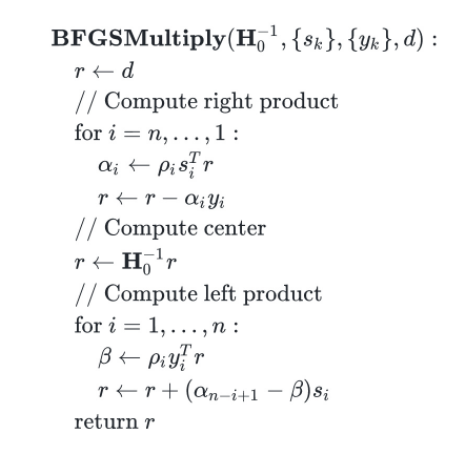
- L-BFGS
BFGS仍然需要每次迭代 sn, yn 并没有减小内存的负担，而 Limit-BFGS 每次只适用最近的m个 sn, yn 因此只储存m个样本。
12.3 程序编写
13 神经网络与深度学习
13.1 神经网络与深度学习简介
- 神经网络无需赘述
- "深度学习"是为了让层数较多的多层神经网络可以训练，能够work而演化出来的一系列的 新的结构和新的方法。
新的网络结构中最著名的就是CNN，它解决了传统较深的网络参数太多，很难训练的问题，使用了“局部感受野”和“权植共享”的概念，大大减少了网络参数的数量
- 原来多层神经网络做的步骤是：特征映射到值。特征是人工挑选。
- 深度学习做的步骤是 信号->特征->值。 特征是由网络自己选择。
13.2 感知机学习
感知机是一个模仿神经元的模型
[此处有图(自己想象)]
接受多个输入（x1，x2，x3…），产生一个输出（output），超参数为阈值，待估参数为每个x的权重
当加权和大于阈值时，信号激活，输出1，否则输出0
13.3 一般神经网络
实际决策中，模型要复杂得多，由多个感知机组成，可能是多层的结构，甚至有多个输出。
神经网络需要在给定输入和输出下，估计出每个神经元最优的权重向量w和阈值b(-threshold)
但是，如果每个神经元输出结果是0或者1，将会使结果过于敏感，因此要通过sigmoid函数将其转为连续输出
13.3.1 激活函数
- sigmoid
- tanh
- 修正线性单元(Rectified linear unit，ReLU）
ReLU(x) =
- 0, if x <= 0
- x, if x > 0
起到单侧抑制的作用
由于非负区间的梯度为常数，因此不存在梯度消失问题(Vanishing Gradient Problem)
13.4 BP反向传播网络
ref : http://blog.csdn.net/u014303046/article/details/78200010
损失函数和代价函数区别
- 损失函数主要指的是对于单个样本的损失或误差；
- 代价函数表示多样本同时输入模型的时候总体的误差——每个样本误差的和然后取平均值。
什么是反向传播网络
- 后项传播（正向），估计出神经元误差
- 前向传播（反向），估计出参数
优点和不足
残差传播到最前面的层已经变得很小，会出现梯度扩散，影响精度
13.4.1 推导
牢记四个公式以及其推导过程
单样本情况下：
定义l为神经网络层编号，j为神经元编号，z为线性值，a为激活值，sigmoid(z)=a
那么，如果需要为第l层的第j个神经元的线性值添加一个扰动 \(\Delta z_j^{[l]}\) ，需要使得最后的损失函数尽可能的变小，那么需要在其负梯度上进行，我们定义这个梯度为其误差 :
\begin{eqnarray} \nonumber \delta_j^{[l]} = \frac{\partial L(a, y)}{\partial z_j^{[l]}} \end{eqnarray}13.4.1.1 公式一：输出层误差
证明：
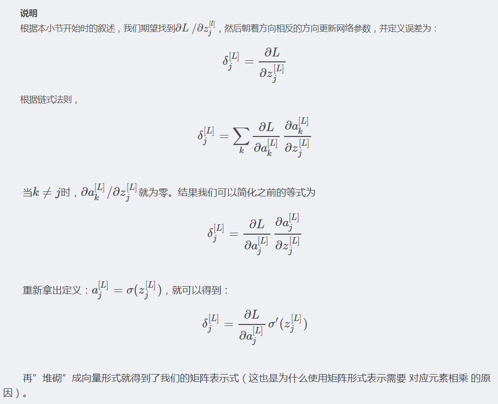
13.4.1.2 公式二：隐含层误差
wkj[l] 表示第l-1层的第j个神经元指向第l层的第k个神经元的权重
证明： 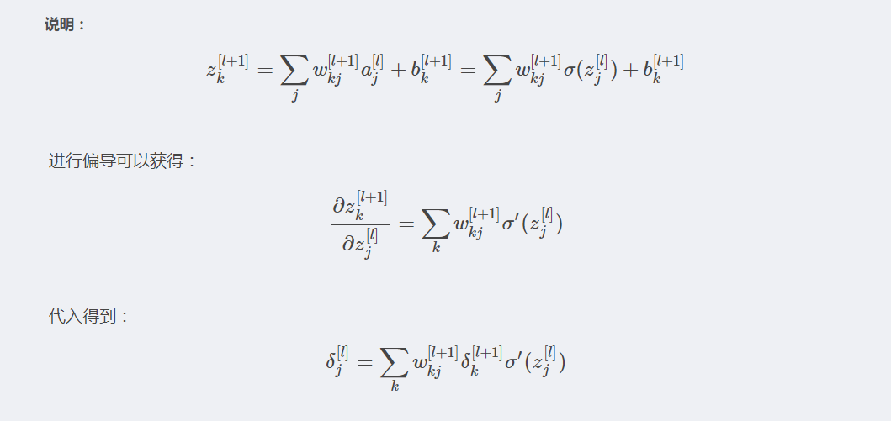
13.4.1.3 公式三：参数变化率，即w和b的梯度
证明： 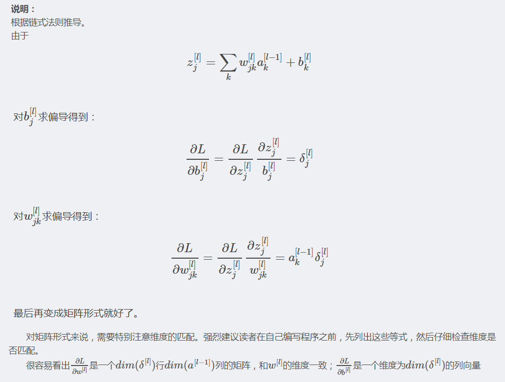
13.4.1.4 公式四：参数更新规则
以 α 为步长，负梯度为方向迭代，公式略
多样本情况下:
n表示第l层神经元个数，m为样本数
- 每一层的误差不再是一个n维的向量，而是一个nxm的矩阵
- 更新b的时候要对每一层的误差矩阵求行均值
- 得到的w依然是 nxn 的矩阵
13.4.2 实现
13.5 卷积神经网络
ref: http://blog.csdn.net/aws3217150/article/details/46405095
要点：
- 主要用在图像识别问题上
- 自带正则化功能，大大减少了参数数目，因此减少了过拟合的程度
13.5.1 卷积
卷积通过核矩阵，将一个较大的矩阵进行缩减
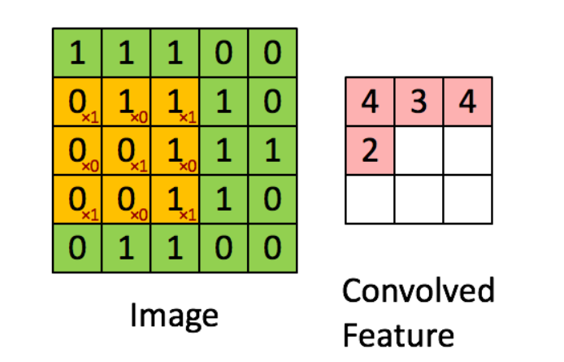
- 如果原始矩阵不仅有长度、宽度，还有深度，则每一深度进行累加（比如：彩图深度为3）
- 如果有多个核函数，每个核函数分别计算
- 每个核函数总能得到一个 NxN 的卷积特征
13.5.1.1 卷积中的超参数：
- 补充0的长度P，一个是为了使图片的形状更方便我们进行卷积，另一个是因为它可以提高识别表现(详细原因请参考cs231n的课程)，比如5x5的图，P=2时得到7x7的图
- 核函数的大小和数量
- 步长 Stride，卷积中默认卷积核一次移动一个单位，其实可以移动Stride单位
假设图片宽度为W， 卷积核宽度为F， 步长为S，补0参数P，输出卷积特征的宽度为H，则有：
\begin{eqnarray} \nonumber H = (W - F + 2P) / S + 1 \end{eqnarray}13.5.2 池化(Pooling)
pooling是一个采样过程，一般采取max-pooling
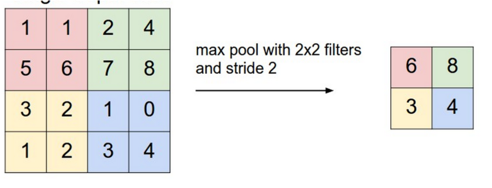
13.5.3 全连接
和一般人工神经网络一样
13.5.4 卷积层参数的确定
共享权重
同一个卷积核，核上每个元素的权重都一样，即如果是5x5的卷积核，则一个核一共只需估计5x5+1=26个参数（1位bias项）
例： 卷积特征 96x96x10（10个核） -> 经过2x2，步长为2的池化后，得到48x48x10个特征 -> 再经过 5x5，步长为1，16个卷积核进行卷积，得到(5x5x10+1)x16=4016个参数，输出特征为44x44x16 -> 再pooling，得到22x22x16个输出特征 -> 此时，全连接到100个神经元的隐含层，需要的参数为：(22x22x16+1)*100=774500
最后得到的参数=774500 + 4016 + 隐含层到输出层的参数
13.6 循环神经网络(Recurrent Neural Network)
ref： https://zybuluo.com/hanbingtao/note/541458 https://zhuanlan.zhihu.com/p/24720659
以层的概念理解神经网络结构，而不是节点
13.6.1 单向循环神经网络
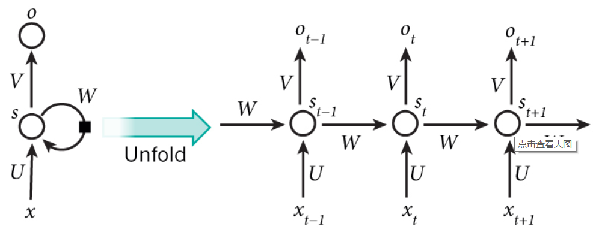
中间的隐含层为循环层，循环层每一个节点的值不仅受与其连接的x的影响，还和上一个循环层节点的影响。
\begin{eqnarray} \nonumber o_t = g(V_{s_t}) \\ \nonumber s_t = f(Ux_t + W _{t-1}) \end{eqnarray}
其中每个循环层神经元的 W, V, U 都是完全一样的，这是循环神经网络的 共享权重 特征，是递归网络相对于前馈网络而言最为突出的优势。
时间结构共享是递归网络的核心中的核心。
13.6.2 双向循环神经网络
上述神经网络方向是 St-1 到 St ，而我们还可以加入一个反向的循环层
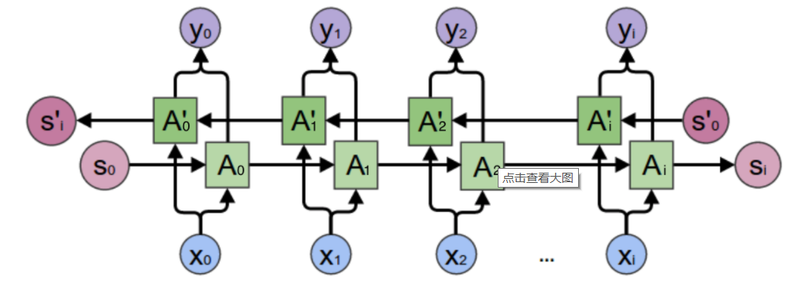
此时需要同时保存两个层：
\begin{eqnarray} \nonumber o_t = g(V_{t} + V_{t}^') \\ \end{eqnarray}13.6.3 训练方法：BPTT
13.6.4 softmax 层
ref： https://www.zhihu.com/question/23765351
\begin{eqnarray} \nonumber S_i = \frac{e^{V_i}}{\sum_j e^{v_j}} \end{eqnarray}其中Vi表示V中第i个元素，Softmax即是该元素的指数，和所有元素指数和的比值
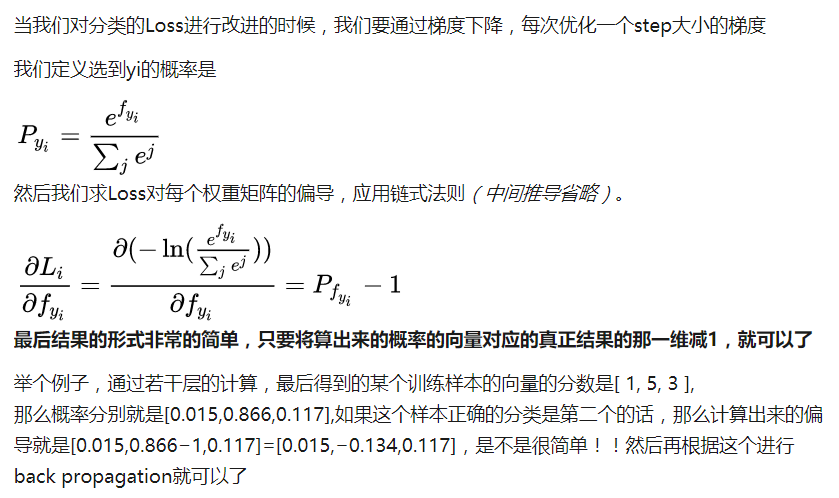
13.6.5 优缺点
优点：
- 解决时序问题
- 共享权重
缺点：
- 时序过长时出现梯度爆炸和梯度消失问题
什么是梯度爆炸和梯度消失
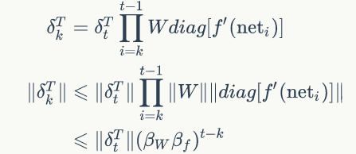
当t-k很大时，误差将极快的收敛到0或者无穷大
如何解决：长短时记忆网络（LTSM）和Gated Recurrent Unit（GRU）
13.6.6 输入与输出
方式：
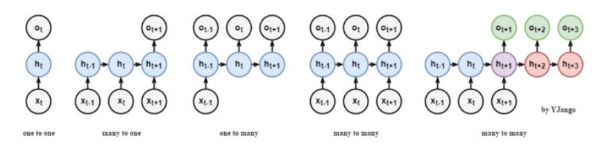
- many to one：常用在情感分析中，将一句话关联到一个情感向量上去。
- many to many：第一个many to many在DNN-HMM语音识别框架中常有用到
- many to many(variable length)：第二个many to many常用在机器翻译两个不同语言时。
类型
与其他前馈网络不同，该网络必须包含时间参数 输入张量形状：(timesteps, nsamples, diminput) 输出张量形状：(timesteps, nsamples, dimoutput)
13.7 递归神经网络(Recursive Neural Network) 了解
13.8 LSTM
为了解决循环神经网络（以后默认RNN为循环神经网络）存在的梯度爆炸和梯度消失的问题，LSTM(Long Short Term Memory Network, LSTM)被提出来
LSTM在循环层中不仅存储原来的状态 ht 还存储一个长期的状态 ct (单元状态)，如下图所示
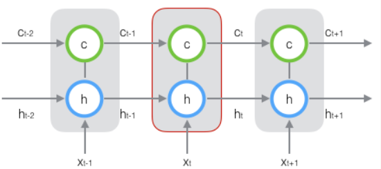
其中每一个状态都是向量。
LSTM的关键，就是怎样控制长期状态c
为此，LSTM提出门(gate)的概念，类似阀门，可以控制只让一部分的状态进来，门事实上是一个全连接层，输入一个向量，输出一个0到1之间的实数等长向量，用我们要控制的向量乘以门得到的结果向量，就可以达到控制的目的。
LSTM有三个门：
- 遗忘门：它决定了上一时刻的单元状态 ct-1 有多少保留到当前时刻单元状态 ct
- 输入门：它决定了当前时刻网络的输入 xt 有多少保存到单元状态 ct
- 输出门：它决定了当前时刻的单元状态 ct 有多少输出到循环层节点的输出值 ht
总体流程如下图：（非常关键）
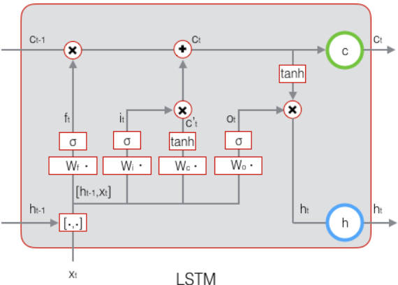
上图解释如下：
- 首先，输入 xt 经过变换：
得到遗忘门向量，作用于 ct-1上（直接按元素乘以 ct-1)
- 再将 xt 经过输入门的变化（公式类似），得到输入门向量 it ，
输入门是作用在当前的单元状态 c'_t 上的 - 计算用于描绘当前输入的单元状态 c't ，根据上一次的输出 ht-1 和这次的输入 xt，得到结果后乘以输入门，达到控制效果，然后加到经过遗忘门后的上一期单元状态中，得到更新后当期单元状态 ct ，可输出为 ct 。由于遗忘门的控制，它可以保存很久很久之前的信息，由于输入门的控制，它又可以避免当前无关紧要的内容进入记忆。
- 计算 ht 的输出门 Ot ，它控制了长期记忆对当前输出的影响。
- 得到LSTM最终输出，它是由输出门和单元状态共同确定的：
13.9 实现
13.9.1 方案1. win10 tensorflow 安装
13.9.1.1 Cuda & cudnn
13.9.1.2 TensorFlow
13.9.2 方案2. 基于theano的Keras win10 安装
http://blog.csdn.net/circle2015/article/details/54235127
- 安装 mingw
conda install mingw libpython
- pip install theano
- pip install keras
- 主文件夹中找到 .keras的配置文件，修改默认后台为theano
- 配置theano
c://Users//ray//.theanorc.txt 文件，里面加入theano的配置项
[global] floatX=float32 device=cpu [blas] ldflags=-LC:\\Users\\yangr\\Documents\\OpenBLAS\\bin -LC:\\Users\\yangr\\Documents\\OpenBLAS\\lib -lopenblas [gcc] cxxflags=-IC:\\Users\\yangr\\Anaconda3\\MinGW
其中openBlas加速库要提前下载：
- 下载openblas库http://sourceforge.net/projects/openblas/files/v0.2.14
- 下载mingw64 http://sourceforge.net/projects/openblas/files/v0.2.14/mingw64_dll.zip/download ，并将其添加到openblas/bin/
- 路径输入至.theanorc.txt
如果遇到问题
File "E:\Things_Installed_Here\Anaconda_Py\envs\Py341\lib\site-packages\theano-0.7.0-py3.4.egg\theano\gof\cmodule.py", line 331, in dlimport
rval = __import__(module_name, {}, {}, [module_name])
ImportError: DLL load failed: The specified module could not be found.
则如下操作：
$ conda remove mingw $ conda install m2w64-toolchain
13.9.3 Keras Tips
13.9.3.1 自定义 metrics 性能评估函数
import keras.backend as K
def f1_score(y_true, y_pred):
# Count positive samples.
c1 = K.sum(K.round(K.clip(y_true * y_pred, 0, 1)))
c2 = K.sum(K.round(K.clip(y_pred, 0, 1)))
c3 = K.sum(K.round(K.clip(y_true, 0, 1)))
# If there are no true samples, fix the F1 score at 0.
if c3 == 0:
return 0
# How many selected items are relevant?
precision = c1 / c2
# How many relevant items are selected?
recall = c1 / c3
# Calculate f1_score
f1_score = 2 * (precision * recall) / (precision + recall)
return f1_score
13.9.4 Experiment 1. 信贷违约预测模型
13.9.5 Experiment 2. 一个简单的缺失语言自动补全
13.9.6 Experiment 3. 手写数字识别
14 工具
- storm
- Flink
- elasticsearch
- kafka